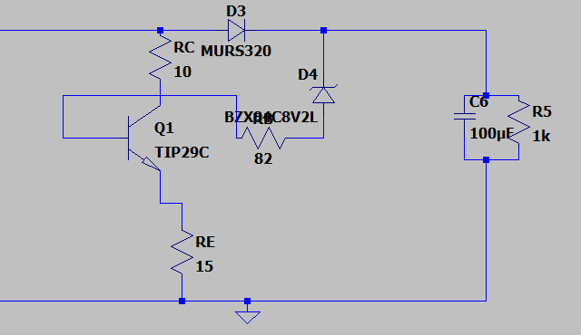
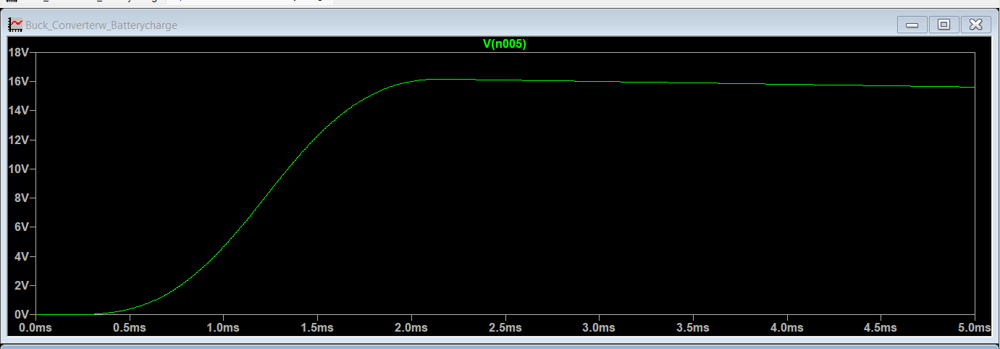
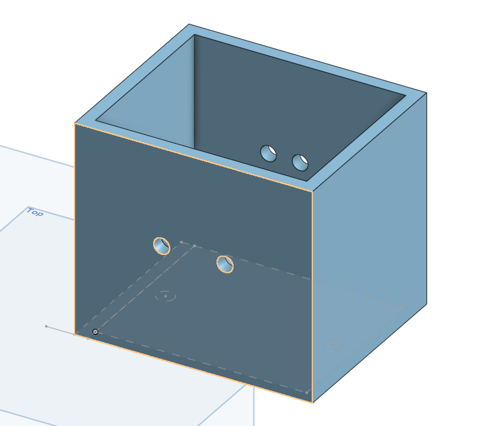
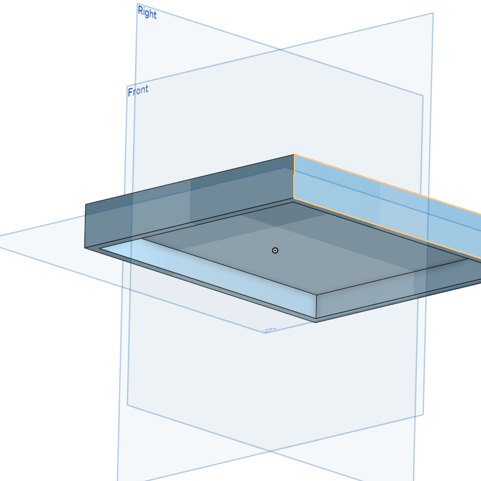
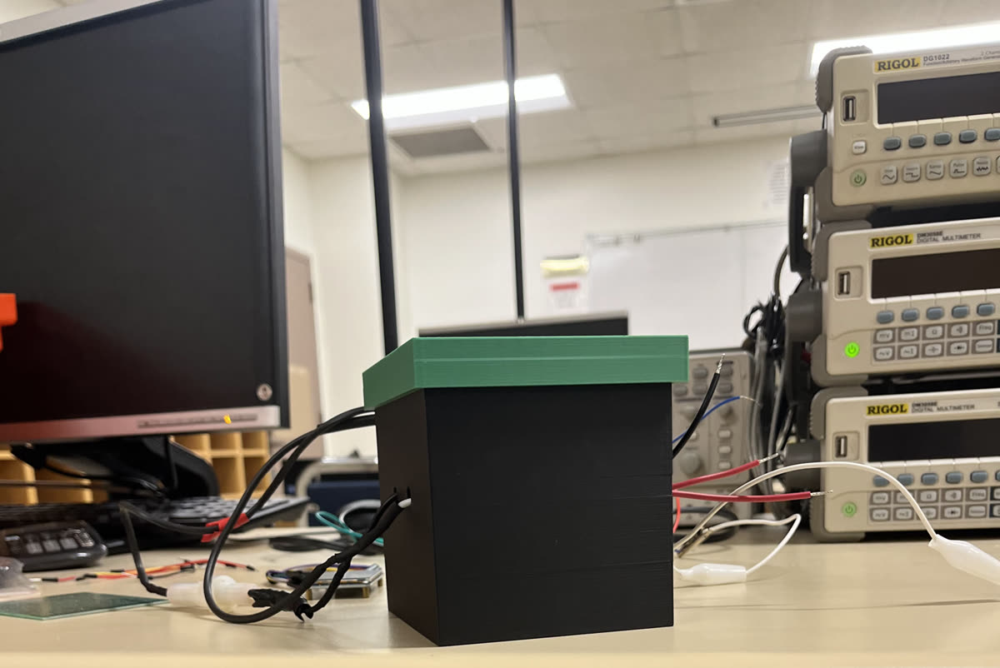
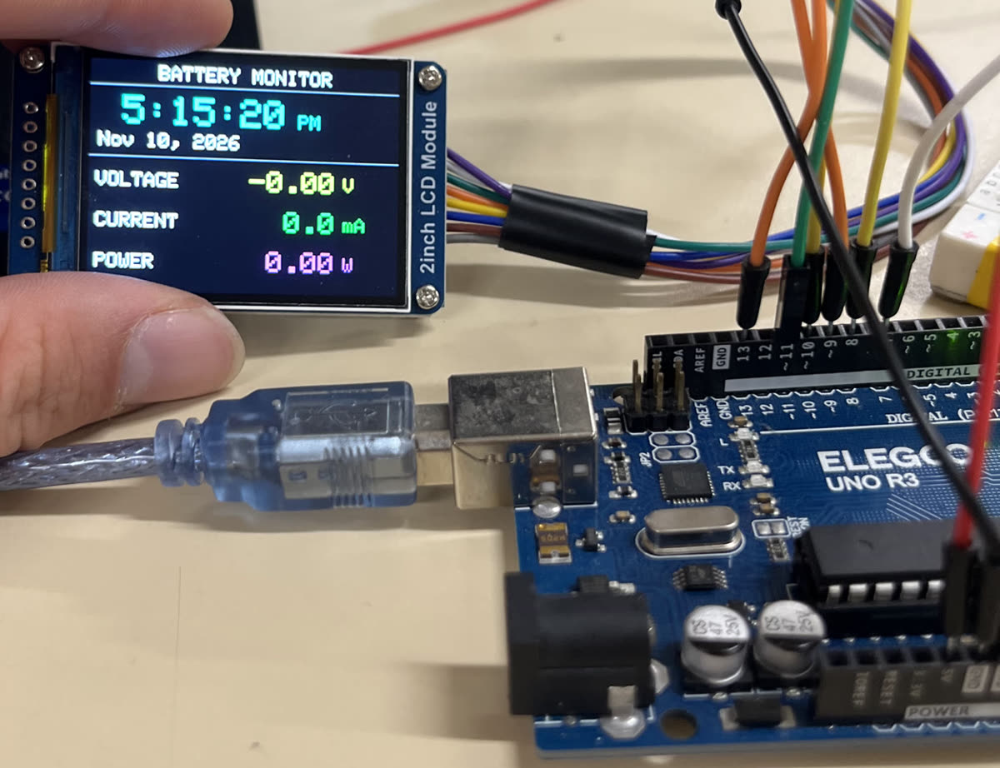
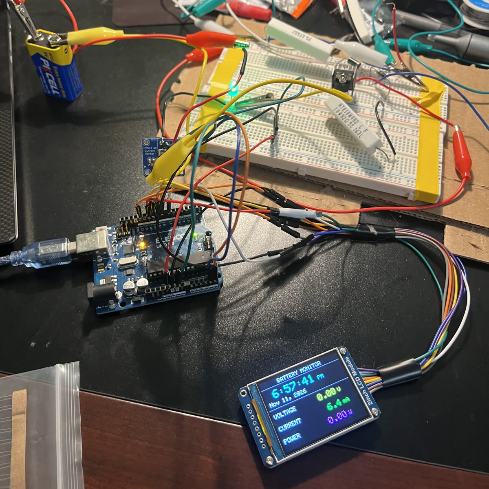
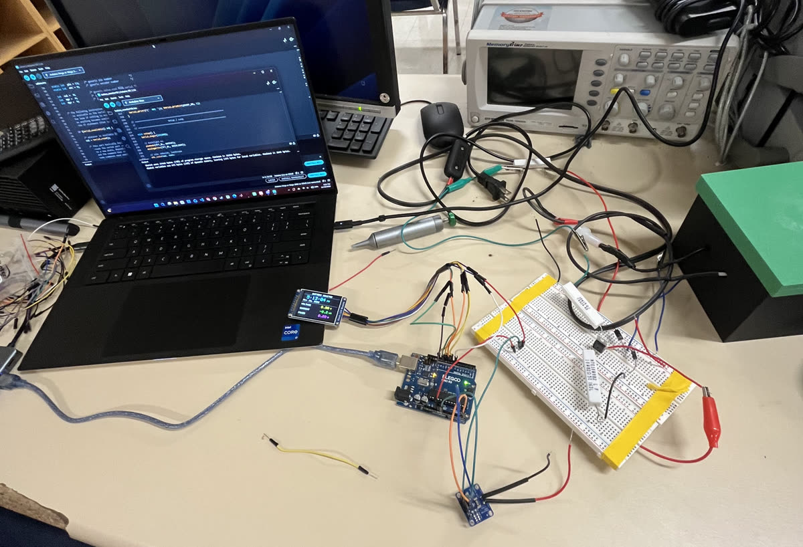
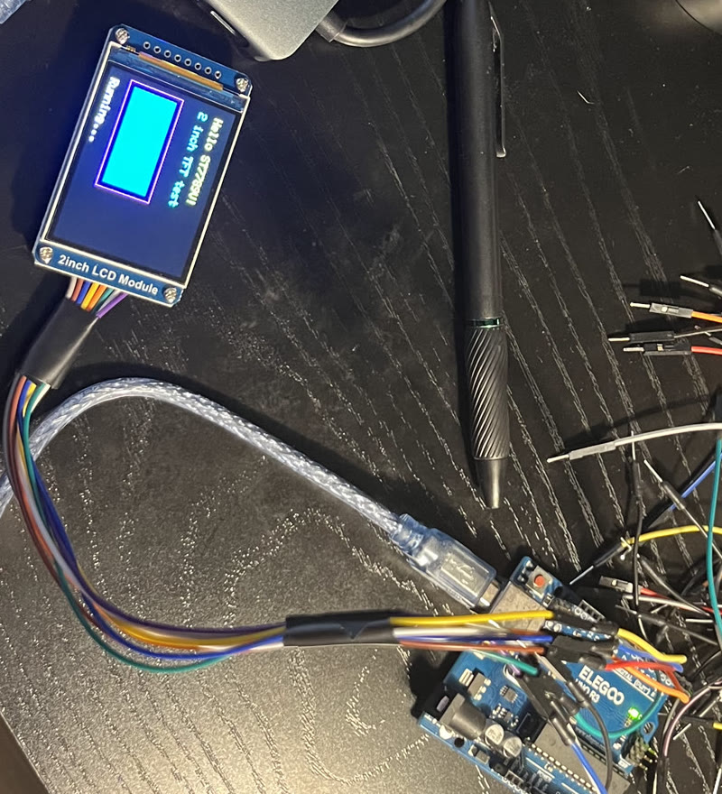

Hands-on projects that take an idea from CAD and simulation to a working build, from an Arduino Tetris game to a battery charging circuit with a 3D-printed enclosure. I'm aiming for design engineering in aerospace or automotive.
See projects Get in touchA battery charging circuit with a live monitoring dashboard. An INA219 sensor measures the voltage, current and power going into the battery, and an Arduino shows the readings in real time on a 2-inch color screen, alongside the time and date. The circuit lives on a breadboard with power resistors for now, and I designed a transformer enclosure in Onshape and 3D-printed it.





Built the charging stage in LTspice and ran transient simulations to check the output before building it.
Modeled a box and fitted lid in Onshape, with holes for the wires to pass through, then 3D-printed it.
Built a "Battery Monitor" screen on the 2" TFT showing time, date, voltage, current and power, each in its own color.
Sensor wired over I²C and reading real current through the test circuit (6.4 mA on a 9 V test source).
Getting accurate bus-voltage readings and building out the charging side of the circuit.
Move from breadboard to a soldered board and mount everything inside the enclosure.



| Part | Arduino pin |
|---|---|
| LCD DIN / CLK | D11 / D13 |
| LCD CS / DC / RST / BL | D10 / D7 / D8 / D9 |
| INA219 SDA / SCL | A4 / A5 |
| INA219 VIN+ / VIN− | supply + / load + |
The load's ground is tied to the Arduino's GND so the INA219 can measure voltage.
/*
Battery Monitor - Arduino Uno R3 + INA219 + 2" ST7789V LCD (240x320)
Shows live load voltage, current, and power from the INA219,
plus a live clock that is set automatically from your computer's
time when you compile/upload the sketch.
Wiring (from earlier):
LCD: VCC-5V GND-GND DIN-D11 CLK-D13 CS-D10 DC-D7 RST-D8 BL-D9
INA219: VCC-5V GND-GND SDA-A4 SCL-A5
VIN+ -> supply (+), VIN- -> load (+), load GND tied to Arduino GND
Libraries (install with Arduino IDE > Tools > Manage Libraries):
- Adafruit ST7735 and ST7789 Library
- Adafruit GFX Library
- Adafruit INA219
- Adafruit BusIO (installed automatically as a dependency)
*/
#include <SPI.h>
#include <Wire.h>
#include <Adafruit_GFX.h>
#include <Adafruit_ST7789.h>
#include <Adafruit_INA219.h>
// ---------------- Pins ----------------
#define TFT_CS 10
#define TFT_DC 7
#define TFT_RST 8
#define TFT_BL 9
// ---------------- Settings you can tweak ----------------
// Seconds between compiling and the sketch actually starting (compile + upload time).
// Increase if the clock runs a few seconds behind right after upload.
const uint8_t UPLOAD_DELAY_SEC = 8;
// Milliseconds per "clock second". The Uno's resonator isn't perfect, so if the clock
// drifts, adjust this: clock runs FAST -> raise it slightly (e.g. 1003); SLOW -> lower it.
const unsigned long MS_PER_SEC = 1000;
// How often to refresh the sensor readings (ms)
const unsigned long SENSOR_INTERVAL = 500;
// Smoothing: 0.0-1.0. Lower = smoother but slower to react. 0.2 is a good start.
const float SMOOTHING = 0.2;
// Currents smaller than this (mA) are shown as 0 so noise doesn't flicker around zero
const float CURRENT_DEADBAND_MA = 1.0;
// Backlight brightness 0-255
const uint8_t BACKLIGHT = 255;
// ---------------- Colors ----------------
#define COL_BG ST77XX_BLACK
#define COL_TITLE ST77XX_WHITE
#define COL_CLOCK ST77XX_CYAN
#define COL_DATE ST77XX_WHITE
#define COL_LABEL ST77XX_WHITE
#define COL_VOLT ST77XX_YELLOW
#define COL_CURR ST77XX_GREEN
#define COL_POWER ST77XX_MAGENTA
#define COL_LINE 0x7BEF // gray
// ---------------- Objects ----------------
Adafruit_ST7789 tft = Adafruit_ST7789(TFT_CS, TFT_DC, TFT_RST);
Adafruit_INA219 ina219;
// ---------------- Clock state ----------------
uint8_t hh, mm, ss;
uint8_t dayOfMonth, monthNum;
uint16_t yearNum;
unsigned long lastTick = 0;
unsigned long lastSensor = 0;
// ---------------- Smoothed readings ----------------
float avgVolt = 0, avgCurr = 0, avgPower = 0;
bool firstReading = true;
const char MONTHS[] = "JanFebMarAprMayJunJulAugSepOctNovDec";
// ---------------- Layout (landscape 320x240) ----------------
const int16_t VALUE_X = 128; // x where numbers start
const int16_t UNIT_X = 262; // x where units start
const int16_t Y_VOLT = 112;
const int16_t Y_CURR = 154;
const int16_t Y_POWER = 196;
// =====================================================================
// Clock
// =====================================================================
uint8_t monthFromString(const char *s) {
for (uint8_t i = 0; i < 12; i++) {
if (strncmp(s, MONTHS + i * 3, 3) == 0) return i + 1;
}
return 1;
}
bool isLeapYear(uint16_t y) {
return (y % 4 == 0 && y % 100 != 0) || (y % 400 == 0);
}
uint8_t daysInMonth(uint8_t m, uint16_t y) {
const uint8_t days[] = {31, 28, 31, 30, 31, 30, 31, 31, 30, 31, 30, 31};
if (m == 2 && isLeapYear(y)) return 29;
return days[m - 1];
}
// Advance the clock by one second, rolling over minutes, hours, days, months, years
void tickOneSecond() {
if (++ss < 60) return;
ss = 0;
if (++mm < 60) return;
mm = 0;
if (++hh < 24) return;
hh = 0;
if (++dayOfMonth <= daysInMonth(monthNum, yearNum)) return;
dayOfMonth = 1;
if (++monthNum <= 12) return;
monthNum = 1;
yearNum++;
}
// __TIME__ = "HH:MM:SS", __DATE__ = "Nov 10 2026" (filled in by the compiler)
void setClockFromCompileTime() {
const char *t = __TIME__;
hh = (t[0] - '0') * 10 + (t[1] - '0');
mm = (t[3] - '0') * 10 + (t[4] - '0');
ss = (t[6] - '0') * 10 + (t[7] - '0');
const char *d = __DATE__;
monthNum = monthFromString(d);
dayOfMonth = (d[4] == ' ' ? 0 : (d[4] - '0')) * 10 + (d[5] - '0');
yearNum = atoi(d + 7);
// Make up for the time spent compiling + uploading
for (uint8_t i = 0; i < UPLOAD_DELAY_SEC; i++) tickOneSecond();
}
// =====================================================================
// Drawing
// =====================================================================
void drawStaticLayout() {
tft.fillScreen(COL_BG);
// Title
tft.setTextSize(2);
tft.setTextColor(COL_TITLE, COL_BG);
tft.setCursor(70, 6);
tft.print(F("BATTERY MONITOR"));
tft.drawFastHLine(0, 26, 320, COL_LINE);
// Divider between clock and readings
tft.drawFastHLine(0, 100, 320, COL_LINE);
// Labels
tft.setTextSize(2);
tft.setTextColor(COL_LABEL, COL_BG);
tft.setCursor(8, Y_VOLT + 5); tft.print(F("VOLTAGE"));
tft.setCursor(8, Y_CURR + 5); tft.print(F("CURRENT"));
tft.setCursor(8, Y_POWER + 5); tft.print(F("POWER"));
// Units
tft.setTextColor(COL_VOLT, COL_BG);
tft.setCursor(UNIT_X, Y_VOLT + 5); tft.print(F("V"));
tft.setTextColor(COL_CURR, COL_BG);
tft.setCursor(UNIT_X, Y_CURR + 5); tft.print(F("mA"));
tft.setTextColor(COL_POWER, COL_BG);
tft.setCursor(UNIT_X, Y_POWER + 5); tft.print(F("W"));
}
void drawClock() {
char buf[16];
// Time, 12-hour format. Drawing text with a background color overwrites
// the old digits, so there's no flicker from clearing the screen.
uint8_t h12 = hh % 12;
if (h12 == 0) h12 = 12;
snprintf(buf, sizeof(buf), "%2u:%02u:%02u", h12, mm, ss);
tft.setTextSize(4);
tft.setTextColor(COL_CLOCK, COL_BG);
tft.setCursor(10, 38);
tft.print(buf);
// AM / PM
tft.setTextSize(2);
tft.setCursor(214, 52);
tft.print(hh < 12 ? F("AM") : F("PM"));
// Date, e.g. "Nov 10, 2026"
char mon[4];
strncpy(mon, MONTHS + (monthNum - 1) * 3, 3);
mon[3] = '\0';
snprintf(buf, sizeof(buf), "%s %2u, %u", mon, dayOfMonth, yearNum);
tft.setTextColor(COL_DATE, COL_BG);
tft.setCursor(10, 76);
tft.print(buf);
}
// Print a number right-aligned in a fixed width so old digits get overwritten
void drawValue(float value, int16_t y, uint8_t decimals, uint16_t color) {
char buf[12];
dtostrf(value, 7, decimals, buf); // width 7, e.g. " 12.34" or " 500.0"
tft.setTextSize(3);
tft.setTextColor(color, COL_BG);
tft.setCursor(VALUE_X, y);
tft.print(buf);
}
// Make the INA219 average 128 samples per reading in hardware (~69 ms each).
// By default it takes ONE quick sample, which catches every bit of ripple and noise.
// Config register 0x00 = 32V range | +/-320mV shunt range | 128-sample avg (bus + shunt) | continuous
void setHardwareAveraging() {
Wire.beginTransmission(0x40);
Wire.write(0x00); // config register
Wire.write(0x3F); // high byte
Wire.write(0xFF); // low byte -> 0x3FFF
Wire.endTransmission();
}
void drawReadings() {
float shunt_mV = ina219.getShuntVoltage_mV();
float bus_V = ina219.getBusVoltage_V();
float current_mA = ina219.getCurrent_mA();
// Load voltage = voltage at VIN- plus the small drop across the shunt resistor
float load_V = bus_V + (shunt_mV / 1000.0);
// Software smoothing (exponential moving average) on top of the hardware averaging
if (firstReading) {
avgVolt = load_V;
avgCurr = current_mA;
firstReading = false;
} else {
avgVolt += SMOOTHING * (load_V - avgVolt);
avgCurr += SMOOTHING * (current_mA - avgCurr);
}
// Hide tiny noise around zero
float shownCurr = (fabs(avgCurr) < CURRENT_DEADBAND_MA) ? 0.0 : avgCurr;
avgPower = avgVolt * shownCurr / 1000.0; // W, from the smoothed values
drawValue(avgVolt, Y_VOLT, 2, COL_VOLT);
drawValue(shownCurr, Y_CURR, 1, COL_CURR);
drawValue(avgPower, Y_POWER, 2, COL_POWER);
// Serial Monitor (115200 baud): raw vs smoothed, handy for checking noise
Serial.print(F("raw V: ")); Serial.print(load_V, 3);
Serial.print(F(" raw mA: ")); Serial.print(current_mA, 1);
Serial.print(F(" | V: ")); Serial.print(avgVolt, 3);
Serial.print(F(" mA: ")); Serial.println(shownCurr, 1);
}
// =====================================================================
// Setup / Loop
// =====================================================================
void setup() {
Serial.begin(115200);
// Backlight on
pinMode(TFT_BL, OUTPUT);
analogWrite(TFT_BL, BACKLIGHT);
// LCD: 240x320, landscape
tft.init(240, 320);
tft.setRotation(1);
// This panel needs color inversion ON (tested with the color diagnostic)
tft.invertDisplay(true);
// Keep the I2C bus from freezing the sketch if a wire glitches
Wire.begin();
Wire.setWireTimeout(3000, true);
// INA219 sensor
if (!ina219.begin()) {
tft.fillScreen(COL_BG);
tft.setTextSize(2);
tft.setTextColor(ST77XX_RED, COL_BG);
tft.setCursor(10, 100);
tft.print(F("INA219 NOT FOUND"));
tft.setCursor(10, 130);
tft.print(F("Check SDA=A4, SCL=A5"));
Serial.println(F("INA219 not found - check wiring"));
while (1) delay(100);
}
// Default calibration is 32V / 2A range (fine for 13.8 V and 0.5 A).
setHardwareAveraging();
setClockFromCompileTime();
drawStaticLayout();
drawClock();
drawReadings();
lastTick = millis();
lastSensor = millis();
}
void loop() {
unsigned long now = millis();
// Clock: advance one second for every MS_PER_SEC that passes
bool clockChanged = false;
while (now - lastTick >= MS_PER_SEC) {
lastTick += MS_PER_SEC;
tickOneSecond();
clockChanged = true;
}
if (clockChanged) drawClock();
// Sensor readings
if (now - lastSensor >= SENSOR_INTERVAL) {
lastSensor = now;
drawReadings();
}
}A full Tetris game written from scratch for an Arduino Uno, running on a 2-inch color TFT screen with five push-button controls. It has all 7 pieces with rotation and wall kicks, line clearing, scoring, and speed that ramps up as you play.

| Part | Arduino pin |
|---|---|
| TFT CS / DC / RST | D10 / D8 / D9 |
| TFT SDA (MOSI) / SCL (SCK) | D11 / D13 |
| Left / Right / Down | D2 / D3 / D4 |
| Rotate / Start | D5 / D6 |
Buttons use the internal pull-ups, so each one just connects its pin to GND.
#include <Adafruit_GFX.h>
#include <Adafruit_ST7789.h>
#include <SPI.h>
// -------------------- Display pins --------------------
#define TFT_CS 10
#define TFT_DC 8
#define TFT_RST 9
Adafruit_ST7789 tft = Adafruit_ST7789(TFT_CS, TFT_DC, TFT_RST);
// -------------------- Button pins --------------------
#define BTN_LEFT 2
#define BTN_RIGHT 3
#define BTN_DOWN 4
#define BTN_ROTATE 5
#define BTN_START 6
// -------------------- Playfield --------------------
// Classic 10x20 Tetris grid
const uint8_t W = 10;
const uint8_t H = 20;
const uint8_t CELL = 12; // pixels per cell (fits 10x20 in 120x240)
const int16_t SCREEN_W = 320;
const int16_t SCREEN_H = 240;
const int16_t FIELD_W = W * CELL; // 120
const int16_t FIELD_H = H * CELL; // 240
const int16_t OFF_X = (SCREEN_W - FIELD_W) / 2; // centered: 100
const int16_t OFF_Y = 0;
// Board: 0 = empty, 1..7 = piece color
uint8_t board[H][W];
// -------------------- Colors --------------------
#define C_BG ST77XX_BLACK
#define C_GRID ST77XX_CYAN
const uint16_t PIECE_COL[8] = {
C_BG, // 0 empty
ST77XX_CYAN, // 1 I
ST77XX_YELLOW, // 2 O
ST77XX_MAGENTA, // 3 T
ST77XX_GREEN, // 4 S
ST77XX_RED, // 5 Z
ST77XX_BLUE, // 6 J
ST77XX_ORANGE // 7 L (orange not in palette; will look similar to YELLOW on some panels)
};
// -------------------- Tetrominoes --------------------
// 4x4 masks in row-major; bit 15 is (0,0). Each piece has 4 rotations.
const uint16_t TETROMINO[7][4] PROGMEM = {
// I
{ 0x0F00, 0x2222, 0x0F00, 0x2222 },
// O
{ 0x0660, 0x0660, 0x0660, 0x0660 },
// T
{ 0x0E40, 0x4C40, 0x4E00, 0x4640 },
// S
{ 0x06C0, 0x4620, 0x06C0, 0x4620 },
// Z
{ 0x0C60, 0x2640, 0x0C60, 0x2640 },
// J
{ 0x08E0, 0x6440, 0x0E20, 0x44C0 },
// L
{ 0x02E0, 0x4460, 0x0E80, 0xC440 }
};
// -------------------- Game state --------------------
int8_t curX, curY; // top-left of 4x4 mask on board coords
uint8_t curR, curId; // rotation 0..3, piece 0..6
bool gameOver = false;
uint16_t score = 0;
uint16_t linesCleared = 0;
// Timing
unsigned long lastFall = 0;
unsigned long fallMs = 500; // gravity (lower = faster)
// Button states (edge detect + repeat)
struct BtnState { uint8_t pin; bool prev; unsigned long rptAt; };
BtnState btns[5] = {
{BTN_LEFT, true, 0},
{BTN_RIGHT, true, 0},
{BTN_DOWN, true, 0},
{BTN_ROTATE, true, 0},
{BTN_START, true, 0}
};
const unsigned long REPEAT_DELAY = 220; // initial
const unsigned long REPEAT_RATE = 60; // subsequent
// -------------------- Utilities --------------------
inline void drawCellPx(int gx, int gy, uint16_t col) {
int16_t x = OFF_X + gx * CELL;
int16_t y = OFF_Y + gy * CELL;
tft.fillRect(x+1, y+1, CELL-2, CELL-2, col);
}
void drawBoardFrame() {
tft.drawRect(OFF_X-1, OFF_Y-1, FIELD_W+2, FIELD_H+2, ST77XX_WHITE);
}
void clearField() {
tft.fillRect(OFF_X, OFF_Y, FIELD_W, FIELD_H, C_BG);
// light grid (optional)
for (int x = 1; x < W; x++) {
tft.drawFastVLine(OFF_X + x*CELL, OFF_Y, FIELD_H, C_GRID);
}
for (int y = 1; y < H; y++) {
tft.drawFastHLine(OFF_X, OFF_Y + y*CELL, FIELD_W, C_GRID);
}
}
void drawBoard() {
for (int y = 0; y < H; y++)
for (int x = 0; x < W; x++)
drawCellPx(x, y, PIECE_COL[board[y][x]]);
}
bool cellHits(int x, int y) {
return (x < 0 || x >= (int)W || y < 0 || y >= (int)H || board[y][x] != 0);
}
bool collide(int bx, int by, uint8_t rot, uint8_t id) {
uint16_t m = pgm_read_word(&TETROMINO[id][rot]);
for (int r = 0; r < 4; r++)
for (int c = 0; c < 4; c++) {
if (m & (0x8000 >> (r*4 + c))) {
int x = bx + c;
int y = by + r;
if (cellHits(x, y)) return true;
}
}
return false;
}
void drawPiece(int bx, int by, uint8_t rot, uint8_t id, bool erase=false) {
uint16_t m = pgm_read_word(&TETROMINO[id][rot]);
for (int r = 0; r < 4; r++)
for (int c = 0; c < 4; c++) {
if (m & (0x8000 >> (r*4 + c))) {
uint16_t col = erase ? C_BG : PIECE_COL[id+1];
drawCellPx(bx + c, by + r, col);
}
}
// redraw grid lines over erased cells for neatness (optional)
if (erase) {
for (int r = 0; r < 4; r++)
for (int c = 0; c < 4; c++) {
int x = bx + c, y = by + r;
if (x >= 0 && x < W && y >= 0 && y < H && board[y][x] == 0) {
int16_t px = OFF_X + x*CELL;
int16_t py = OFF_Y + y*CELL;
tft.drawRect(px, py, CELL, CELL, C_GRID);
}
}
}
}
void lockPiece() {
uint16_t m = pgm_read_word(&TETROMINO[curId][curR]);
for (int r = 0; r < 4; r++)
for (int c = 0; c < 4; c++) {
if (m & (0x8000 >> (r*4 + c))) {
int x = curX + c;
int y = curY + r;
if (y >= 0 && y < H && x >= 0 && x < W) {
board[y][x] = curId + 1;
}
}
}
}
void collapseLines() {
int cleared = 0;
for (int y = H-1; y >= 0; y--) {
bool full = true;
for (int x = 0; x < W; x++) if (board[y][x] == 0) { full = false; break; }
if (full) {
cleared++;
// move rows down
for (int yy = y; yy > 0; yy--) {
for (int x = 0; x < W; x++) board[yy][x] = board[yy-1][x];
}
for (int x = 0; x < W; x++) board[0][x] = 0;
y++; // re-check this row
}
}
if (cleared) {
linesCleared += cleared;
score += (cleared == 1 ? 40 : cleared == 2 ? 100 : cleared == 3 ? 300 : 1200);
if (fallMs > 120) fallMs -= 10 * cleared; // speed up a bit
drawBoard();
// update HUD
tft.fillRect(4, 4, 92, 28, C_BG);
tft.setCursor(4, 4); tft.print(F("Score: ")); tft.print(score);
tft.setCursor(4, 16); tft.print(F("Lines: ")); tft.print(linesCleared);
}
}
void spawnPiece() {
curId = random(0, 7);
curR = 0;
curX = (W/2) - 2;
curY = -1; // spawn slightly above
if (collide(curX, curY+1, curR, curId)) { // immediate collision → game over
gameOver = true;
} else {
curY++;
drawPiece(curX, curY, curR, curId, false);
}
}
void resetGame() {
memset(board, 0, sizeof(board));
score = 0;
linesCleared = 0;
fallMs = 500;
gameOver = false;
tft.fillScreen(C_BG);
drawBoardFrame();
clearField();
drawBoard();
// HUD
tft.setTextSize(1);
tft.setTextColor(ST77XX_WHITE, C_BG);
tft.setCursor(4, 4); tft.print(F("Score: 0"));
tft.setCursor(4, 16); tft.print(F("Lines: 0"));
tft.setCursor(4, 28); tft.print(F("Btns: L R D Rot Start"));
spawnPiece();
}
bool btnPressed(BtnState &b) {
bool now = digitalRead(b.pin); // pullup: LOW = pressed
bool pressedEdge = (b.prev == true && now == false);
bool held = (now == false);
unsigned long t = millis();
bool fire = false;
if (pressedEdge) {
fire = true;
b.rptAt = t + REPEAT_DELAY;
} else if (held && t >= b.rptAt) {
fire = true;
b.rptAt = t + REPEAT_RATE;
}
b.prev = now;
return fire;
}
void rotatePiece() {
uint8_t nr = (curR + 1) & 3;
// simple wall-kick: try center, left, right
int tryX[3] = {curX, curX-1, curX+1};
for (int i = 0; i < 3; i++) {
if (!collide(tryX[i], curY, nr, curId)) {
drawPiece(curX, curY, curR, curId, true);
curX = tryX[i];
curR = nr;
drawPiece(curX, curY, curR, curId, false);
return;
}
}
}
void setup() {
// Buttons
pinMode(BTN_LEFT, INPUT_PULLUP);
pinMode(BTN_RIGHT, INPUT_PULLUP);
pinMode(BTN_DOWN, INPUT_PULLUP);
pinMode(BTN_ROTATE, INPUT_PULLUP);
pinMode(BTN_START, INPUT_PULLUP);
// Display
tft.init(240, 320); // for 320x240 panel (width, height)
tft.setRotation(1); // landscape
tft.fillScreen(C_BG);
// Seed RNG
randomSeed(analogRead(A0));
resetGame();
}
void loop() {
// Handle Start/Reset at any time
if (btnPressed(btns[4])) {
resetGame();
return;
}
if (gameOver) {
// Show game over banner
tft.fillRect(OFF_X + 4, OFF_Y + FIELD_H/2 - 10, FIELD_W - 8, 20, ST77XX_RED);
tft.setTextColor(ST77XX_WHITE, ST77XX_RED);
tft.setTextSize(2);
tft.setCursor(OFF_X + 14, OFF_Y + FIELD_H/2 - 6);
tft.print(F("GAME OVER - START"));
tft.setTextSize(1);
delay(50);
return;
}
// Inputs
if (btnPressed(btns[0])) { // left
if (!collide(curX-1, curY, curR, curId)) {
drawPiece(curX, curY, curR, curId, true);
curX--; drawPiece(curX, curY, curR, curId, false);
}
}
if (btnPressed(btns[1])) { // right
if (!collide(curX+1, curY, curR, curId)) {
drawPiece(curX, curY, curR, curId, true);
curX++; drawPiece(curX, curY, curR, curId, false);
}
}
if (btnPressed(btns[3])) { // rotate
rotatePiece();
}
// Soft drop (while held we accelerate gravity)
bool downHeld = (digitalRead(BTN_DOWN) == LOW);
unsigned long now = millis();
if (now - lastFall >= (downHeld ? 40 : fallMs)) {
lastFall = now;
// try move down
if (!collide(curX, curY+1, curR, curId)) {
drawPiece(curX, curY, curR, curId, true);
curY++; drawPiece(curX, curY, curR, curId, false);
} else {
// lock, clear, spawn
lockPiece();
collapseLines();
spawnPiece();
}
}
}I'm an electrical engineering student at Cal State Long Beach (CSULB), interested in design engineering for the aerospace and automotive industries. I like taking a project through every stage: modeling parts in CAD, simulating circuits before building them, writing the firmware, and testing everything on the bench. I'm looking for a place where I can keep learning design from experienced engineers and contribute to real hardware.
Onshape part modeling, 3D printing, enclosure design
Circuit design, LTspice simulation, breadboard prototyping, sensors and displays
C/C++ on Arduino, I²C and SPI devices, oscilloscope, multimeter and bench supplies
Interested in my work, or have a design role or internship in aerospace or automotive? I'd love to connect.
Connect on LinkedInlinkedin.com/in/aaronsauce51